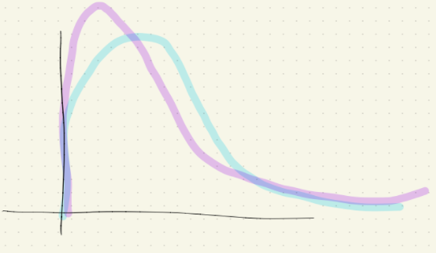
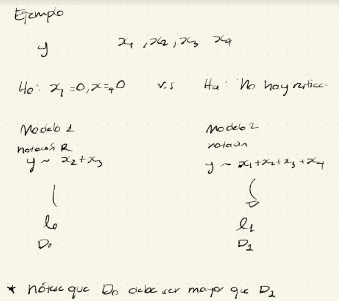

Sobre los MLG.
\[ \underbrace{g(y)}_{\text{Función } \\ \text{de la respuesta.}} = \beta_0 + \beta_1x_1 + ... + \beta_k x_k + \epsilon \]
Hay dos componentes
| Componente 1 | Componente 2 |
|---|---|
| Familia de distribuciones lineal exponencial. La elección de una distribución particular generalmente se ayuda de la naturaleza de la variable respuesta en un escenario. | Función link. Ya que se especificó una distribución de la familia lineal exponencial, se necesita relacionar a la media de la componente sistemática \[ \beta_0 + \beta_1x_1 + ... + \beta_k x_k + \epsilon \] |
Se dice que una distribución pertenece a la familia lineal exponencial si su función de densidad se puede escribir como:
\[ f(y; \theta, \phi) = \exp\bigg\{ \frac{y\theta - b(\theta)}{\phi} + S(y,\theta)\bigg\} \]
donde
\(\theta\): Es el parámetro de interés (generalmente de la media).
\(\phi\): Parámetro de escala.
\(b(\theta)\): Función de \(\theta\) (conocido)
\(S(y, \phi)\): Es una función de \(\phi\) (conocido)
Afortunadamente, muchos de los distribudores que ya conocen pertenecen a la familia exponencial lineal
| Bernoulli | Gamma | Beta |
| Poisson | Normal | Gamma Inversa |
| Binomial | Geométrica | Gaussiana Invertida |
| Binomial Negativa |
Si la distribución de \(Y\) pertenece a la LED (Linear Exponencial Distribution) entonces
\[ \mu := \mathbb{E}(Y) = b'(\theta)\\ Var(Y) = \phi b''(\theta) \]
Es útil explicar a la \(Var(Y)\) en términos de \(\mathbb{E}(Y)\) i.e. \(Var(Y) = \phi \nu(\mu)\) a \(\nu(\mu)\) se le conoce como función varianza.
Una propiedad bonita en LED es que \(\nu(\mu) = b''(\theta)\)
Si \(Y\sim Poisson(\lambda)\), es decir, \(f_Y(y) = \frac{e^{-\lambda}\lambda^y}{y!} \bigg|^y_{\{0,1,...\}}\) ¿Y pertenece a la familia exponencial lineal? Sí
Demostración.
\[ f_Y(y) = \frac{e^{-\lambda}\lambda^y}{y!} = \exp\{ -\lambda + y\log(y) - \log(y!)\} = \exp\{ y\theta - e^\theta - \log(y!)\}, \\ \text{ donde } \theta = \log(\lambda)\\ \\ \therefore f_{Y} \in LED_{\Box} \]
En el caso poisson se tiene que
| \[ \theta = \log(\lambda)\\ b(\theta) = e^\theta\\ \phi = 1\\ S(y, \phi) = -\log(y!) \] | \[ \Rightarrow \] | \[ \mathbb{E}(Y) = b'(\theta) = e^\theta = \lambda \\ Var(Y) =\phi b''(\theta) = 1 \cdot e^\theta = \lambda \] Que es algo ya esperado |
Esta relaciona a la media de la respuesta con la combinación lineal de las variables explicativas i.e.
\[ g(\mu) = \mathbb{x}^T \beta = \beta_0 + \beta_1x_1 + ... + \beta_k x_k \]
Donde \((\beta_0,.... \beta_k) = \beta\) es un vector de parámetros a estimar donde \(g(\cdot)\) es monótona (creciente o decreciente).
GML: Una LED para la respuesta & Una función link
Hay una función link especial, que reconoce como la función link canónica que satisface la siguiente:
\[ g(\mu) = \theta \] donde es el parámetro de la LED.
Normal: \(g(\mu) = \mu\)
Bernoulli: \(g(\pi) = \log(\frac{\pi}{1-\pi})=: logit(\pi)\)
Poisson: \(g(\mu) = \log(\mu)\)
Gamma: \(g(\mu) = \frac{1}{\mu}\)
Inversa Gaussiana: \(g(\mu) = \frac{1}{\mu^2}\)
Recordatorio: Para el caso Bernoulli
\[ \log\bigg(\frac{\pi}{1-\pi}\bigg) = \beta_0 + \beta_1x_1 +... + \beta_kx_k \iff \pi = \frac{e^{\beta_0 + \beta_1x_1 + ... + \beta_k x_k }}{1+e^{\beta_0 + \beta_1x_1 + ... + \beta_k x_k }} \]
Si \(\pi \geq 0.5 \rightarrow \hat{y} = 1\)
Si \(\pi < 0.5 \rightarrow \hat{y} = 0\)
Recordatorio: Poisson
\[ \log(\lambda) = \beta_0 + \beta_1x_1 +... + \beta_kx_k \\ \rightarrow \lambda = \exp\{\beta_0 + \beta_1x_1 +... + \beta_kx_k \}\\ \rightarrow \hat{\lambda} = \exp\{\hat{\beta_0} + \hat{\beta_1}x_1 +... + \hat{\beta_k}x_k \} \]
Como siempre hay que saber ¿Qué nos interesa?
Sea \(L\) la función de verosimilitud. Como \(f_{Y_i} \in LED\) Entonces:
\[ L(\beta) = \prod_{i=1}^n f_{Y_i}(y_i) = \prod_{i=1}^n \exp\bigg\{\frac{y_i\theta_i - b(\theta_i)}{\phi_i} + S(y_i, \phi_i)\bigg\} \]
Además vemos que se está utilizando el link canónico y esto nos permitirá escribir:
\[ L(\beta) = \prod_{i=1}^n \exp\bigg\{\frac{y_i (\mathbb{x}_i^{_T}\beta) - b(\mathbb{x}_i^{_T}\beta)}{\phi_i} + S(y_i, \phi_i)\bigg\} \]
Como antes, preferimos obtener la log-verosimilitud.
\[ l(\beta) = \log(L(\beta)) = \sum_{i=1}^n \bigg(\frac{y_i (\mathbb{x}_i^{_T}\beta) - b(\mathbb{x}_i^{_T}\beta)}{\phi_i} + S(y_i, \phi_i)\bigg) \]
Para encontrar el estimador máximo verosímil,
\[ \text{Ecuación score:}\\ \boxed{\frac{\partial}{\partial \beta} l(\beta) = \underline{0}} \]
En este caso
\[ \frac{\partial}{\partial \beta} l(\beta) = \sum_{i=1}^n \bigg(\frac{y_i \mathbb{x}_i - b'(\mathbb{x}_i^{_T}\beta)\mathbb{x}_i}{\phi_i}\bigg) = \sum_{i=1}^n \bigg(\frac{y_i \mathbb{x}_i - \mu_i\mathbb{x}_i}{\phi_i}\bigg) = \sum_{i=1}^n \bigg(\frac{y_i - \mu_i}{\phi_i}\bigg)\mathbb{x}_i \]
Se tiene que resolver
\[ \sum_{i=1}^n \bigg(\frac{y_i - \mu_i}{\phi_i}\bigg)\mathbb{x}_i = \underline{0} = \begin{pmatrix} 0 \\ \vdots \\ 0 \end{pmatrix} \]
“Mala” noticias. Esto se resuelve numéricamente
Afortunadamente lo hace R o Python.
Resumiendo
Supóngase que se desea estimar
\[ \beta = (\beta_0, ..., \beta_k) \rightarrow \hat{\beta} = (\hat{\beta}_0, ..., \hat{\beta}_k) \]
Paso 1: Calcular el valor estimado de la “linked mean”
\[ g(\hat{\mu}) = \mathbb{x}^T \hat{\beta} = \hat{\beta_0} + \hat{\beta_1}x_1 + ... + \hat{\beta_k} x_k \]
Paso 2: Invertir \(g\), para obtener la media ajustada/estimada, i.e.
\[ \hat{\mu} = g^{-1} (\mathbb{x}^{_T}\hat{\beta}) \]
Notación. Sea la notación \(\mu\) ó \(\hat{y}\) para denotar a la media ajustada.
\(\mu\) es el estimador máximo verosímil de \(\mu = g^{-1}(\underline{x}^{_T}\beta)\)
Este es:
Consistente
Asintóticamente insesgado
Asintóticamente gaussiano
La propiedad que hace especial a la función link canónica es que el estimado es insesgado.
Ejemplo
En el caso Bernoulli \(g(\pi) = \log(\frac{\pi}{1-\pi})\) ¿Quién es \(g^{-1}(t)\)?
Sea \(z = \log(\frac{\pi}{1-\pi})\), despejemos a \(\pi\)
\[ e^{z} = \frac{\pi}{1-\pi} \iff e^z-\pi e^z = \pi \iff e^z = \pi(1+e^z) \iff \pi = \frac{e^z}{1+e^z} \\ \therefore g^{-1}(t) = \frac{e^t}{1+e^t} \]
Entonces nos recuerda a un viejo conocido 👴🏻
\[ \hat{\pi} = \frac{e^{\mathbb{x}^{_T} \hat{\beta}}}{1+e^{\mathbb{x}^{_T} \hat{\beta}}} \\ \text{Probabilidades estimadas en el modelo de regresión logística} \]
El GLM ya no se tiene la descomposición
\[ TSS = RSS + RegSS \]
😢 Por lo tanto no está definido el coeficiente de determinación \[R^2\] 😢
Las medidas comunes son la devianza y la pseudo \(R^2\)
El modelo saturado es uno con la misma distribución que la respuesta y función link que el GLM ajustado pero con tantos parámetros como observaciones.
¿Qué significa esto?
El modelo saturado es tal que los valores ajustados son exactamente iguales a los valores observados, i.e.
\[ \underbrace{\hat{\mu}_i = y_i}_{\text{bajo el modelo saturado}} \text{ para todo } i = 1,...,n \]
¿Y la justificación matemática?
\[ \frac{\partial}{\partial \theta_i} \log(f(y_i;\theta_i,\phi_i)) = \frac{y_i - \overbrace{b'(\theta_i)}^{\hat{\mu_i}}}{\phi_i} = 0 \]
por lo tanto, la media ajustada \(\hat{\mu}_i = b'(\hat{\theta_i})\) es igual al valor de la respuesta observada \(y_i\), i.e. el modelo saturado genera un ajuste perfecto.
El modelo más elaborado proporciona el mejor ajuste, por lo tanto debe tener la log-verosimilitud más alta (que cualquier otro GLM ajustado)
La devianza es una medida de bondad de ajuste que se basa en la verosimilitud.
Definición.
\[ D = 2(l_{\text{SAT}} - \underbrace{l}_{\text{modelo que} \\ \text{estoy evaluando}}) \]
Una devianza grande es indicativo de un ajuste pobre.
Una devianza pequeña es indicativo de buen ajuste.
Paso 1: Escribir una expresión genérica para la función de verosimilitud, en términos de las medias desconocidas \(\mu_1, ..., \mu_n\) (Recuérdese que se está inclinado a tratar a la media como un parámetro GLM).
Paso 2: Hacer las sustituciones
\(\mu_i \mapsto y_i\) para el modelo saturado. Con esto tenemos \(l_{\text{SAT}}\)
\(\mu_i \mapsto \hat{\mu}_i\) para el modelo saturado. Con esto tenemos \(l\)
Paso 3: Hacer el cálculo \(D = 2(l_{SAT} - l)\) en términos de \(y_i'^s\) y \(\hat{\mu}_i'^s\)
Ejemplo (Regresión Poisson)
Para el caso de que \(y_1, ... , y_n\) tenga distribución Poisson con medias \(\mu_1, ..., \mu_n\) respectivamente:
Paso 1: Expresión genérica: \[\begin{align*} l(\mu_1, ..., \mu_n) &= \log\bigg(\prod_{i=1} ^n f(y_i)\bigg) \\ & = \log\bigg(\prod_{i=1} ^n \frac{e^{-\mu_i}\mu_i^{y_i}}{y_i!}\bigg) \\ &= \sum_{i=1}^n \bigg(-\mu_i +y_i\log(\mu_i) - \log(y_i!)\bigg) \end{align*}\]
Paso 2: Hacer las sustituciones
\(\mu_i \mapsto y_i\) para el modelo saturado.
\[ l_{SAT} = \sum_{i=1}^n \bigg(-y_i +y_i\log(y_i) - \log(y_i!)\bigg) \]
\(\mu_i \mapsto \hat{\mu}_i\) para el modelo saturado.
\[ l = \sum_{i=1}^n \bigg(-\hat{\mu}_i +y_i\log(\hat{\mu}_i) - \log(y_i!)\bigg) \]
Paso 3:
\[ \begin{align*} D &= 2(l_{SAT} -l) = 2\sum_{i=1}^n \bigg( \hat{\mu}_i - y_i + y_i(\log(y_i) - \log(\hat{\mu}_i)) \bigg) \\ &= 2\sum_{i=1}^n \bigg( y_i\log(\frac{y_i}{\hat{\mu}_i}) - (y_i - \hat{\mu}_i) \bigg) \end{align*} \]
\(D\) debe ser pequeño. Intuitivamente “Si tengo 2 modelos, me quedo con el de devianza menor”
Definición.
\[ pseudoR^2 = \frac{l - l_{IID}}{l_{SAT} - l_{IID}} \]
pseudo\(R^2 \in (0,1)\)
pseudo\(R^2\) grande es indicativo de mejor ajuste del modelo.
Donde:
\(l_{\text{SAT}}\): log-verosimilitud del modelo saturado.
\(l\): log-verosimilitud del GLM en consideración.
\(l_{\text{IID}}\): log-verosimilitud clásica que se aprende en Inferencia Estadística.
Se tiene interés en pruebas de hipótesis y 2 criteriors de selección de modelos
AIC = \(-2l + 2p\)
BIC = \(-2l + p\log(n)\)
¿Por qué escoger la función link de esta forma? ¿Cómo la encontramos en general?
\[ \boxed{g(\mu) = \underline{x}^T\beta} \]
Hipótesis de la función link canónica
\(g(\mu) = \theta\) donde \(\theta\) proviene de la parametrización como miembro de la familia exponencial. Lo anterior implica:
\[ g(\mu) = \theta \underbrace{\Rightarrow}_{\mu = b'(\theta) \\ \text{en familia} \\ \text{LED}} g(b'(\theta)) = \theta\\ \Rightarrow b'(\theta) = g^{-1}(\theta) \Rightarrow g(\theta) = (b'(\theta))^{-1}, \text{ donde -1 es de la función inversa.} \]
Para obtener la función link canónica vemos, se debe cumplir que
\[ \boxed{g(\theta) = \bigg(b'(\theta)\bigg)^{-1}} \]
Ejemplos:
\[ \begin{align*} \frac{e^{-\lambda}\lambda^y}{y!} &= \exp\{-\lambda + y\log(\lambda) - \log(y!)\} = \exp\{y\theta - e^{\theta} - \log(y!)\} \\ &\text{Donde } \\ &\theta = \log(\lambda) \\ &b(\theta) = e^\theta\\ &\phi = 1 \\ &S(y, \phi) = -\log(y!) \\ \mathbb{E}(Y) &= b'(\theta) = e^\theta = e^{\log(\lambda)} = \lambda \text{ (como ya esperábamos}) \\ Var(Y) &= \phi\cdot b'(\theta) \end{align*} \]
En este caso, la función link canónica es
\[ b(\theta) = e^\theta, b'(\theta) = e^\theta \\ \Rightarrow g(\theta) = \bigg(b'(\theta)\bigg)^{-1} = \log(\theta) \]
Si \(Y \sim Bnlli(p)\), es ddecir \(f(y) = p^y(1-p)^{1-y}\) ¿Pertenece a la familia exponencial lineal? Sí
\[ \begin{align*} f(y) &= p^y(1-p)^{1-y} = e^{y\log(p) + (1-y)\log(1-p)}\\ &= \exp\bigg\{ y\big[\log(p) - \log(1-p)\big] + \log(1-p)\bigg\} \\ &= \exp\bigg\{ y\log\bigg( \frac{p}{1-p}\bigg) + \log(1-p) \bigg\} \\ &= \exp\bigg\{ \frac{y\theta-\log(1+ e^\theta)}{1} + 0 \bigg\} \\ \text{De donde } \\ \theta &= \log(\frac{p}{1-p}) \iff p = \frac{e^\theta}{ 1 + e^\theta} \\ \Rightarrow \log(1-p) &= \log\bigg( 1- \frac{e^\theta}{ 1 + e^\theta} \bigg) = \log\bigg(\frac{1}{ 1 + e^\theta} \bigg) = -\log(1+e^\theta) \\ b(\theta) &= \log(1+ e^\theta) \rightarrow b'(\theta) = \frac{e^\theta}{1+e^\theta}\\ \therefore g(\theta) &= \bigg(b'(\theta)\bigg)^{-1} = \log\bigg(\frac{\theta}{1-\theta}\bigg) \end{align*} \]
Cuando \(Y\) se distribuye Gamma o Inversa Gaussiana, es decir, que su resultado es positivo “continuo” con un sesgo (ó ligero sesgo) hacia la derecha, tenemos lo siguiente:
\[ b(\theta) = -\log(\theta) \\ b'(\theta) = -\frac{1}{\theta} \\ g(\mu) = -\frac{1}{\mu} \]
\[ b'(\theta) = (-2\theta)^{\frac{-1}{2}} \\ g(\mu) = \frac{-1}{2 \mu^2} \propto \frac{1}{\mu^2} \]

La prueba de hipótesis más popular para este caso es:
\[ H_0: \underbrace{\beta_1 = \beta_2 = ...= \beta_r = 0}_{\text{un subconjunto de variables}\\ \text{"explicativas" no tiene uso}} \space \space \space \space \space \space \space \space \space v.s. \space \space \space \space \space \space \space \space \space H_a: \text{No hay restricciones sobre los }\beta'^s \]
\[ LST := 2(l_1 - l_0) \]
Donde \(l_1, l_0\) son las verosimilitudes bajo la hipótesis alternativa y nula, respectivamente.
Mientras más grande sea LRT (Likehood Ratio Test), más evidencia se tendrá en contra de \(H_0\) (en favor de \(H_a\))
Nótese que
\[ \begin{align*} LRT &= 2 (l_1- l_0) = 2(l_1 - l_{SAT} - l_0 + l_{SAT}) \\ &= \underbrace{2(l_{SAT} - l_0)}_{\text{Devianza del} \\ \text{modelo en la} \\ \text{hipótesis nula}} - \underbrace{2(l_{SAT} - l_1)}_{\text{Devianza del} \\ \text{modelo en la} \\ \text{hipótesis alternativa}} \\ &= D_0 - D_1 \end{align*} \]
A esta prueba se le conoce como Prueba de diferencias de devianza ó Prueba de devianza.
Bajo \(H_0, LRT \sim \chi^2_{(r)}\). Se rechaza \(H_0\) si \(LRT_{obs} > \underbrace{\chi^2_{r, \alpha}}_{\text{upper cuantil} \\ \text{al nivel } \alpha}\)

Debe ser \(D_0\) mayor a \(D_1\) pues la estadística de prueba debe ser positiva, pues el modelo bajo \(H_0\) es más restringido, por lo tanto, se aleja más del modelo saturado que bajo \(H_a\).